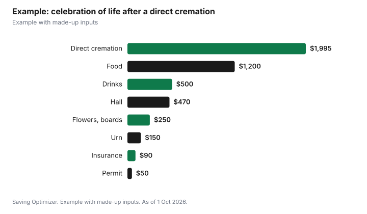

Events · Canada
Celebration of Life Costs in Canada: Venue, Food, Permits and Paying for It
A celebration of life is a memorial gathering focused on the person's life, and it costs mainly what the venue, food and drinks cost, because it can be held anywhere and on any timeline. Many families pair it with a direct cremation, which one Ottawa provider lists from $1,995 including taxes, and hold the gathering weeks later at home, a hall or a restaurant. In Ontario, a funeral reception at a rented hall without a liquor licence needs a $50-a-day permit to serve free drinks. The CPP death benefit, $2,500 or in some cases $5,000, can help with costs.
Key takeaways
- A celebration of life has no fixed format and can be held weeks after a death.
- Pairing it with a direct cremation keeps the total down; one Ottawa provider lists direct cremation from $1,995 including taxes.
- Ontario: no alcohol permit at home; $50 a day for free drinks at an unlicensed rented hall.
- Municipal scattering or niche fees are separate; Mississauga lists scattering at $454.44 for residents.
- CPP death benefit: $2,500, or $5,000 in some cases since 2025.
- Example with made-up inputs: a hall gathering for 80.
How it differs from a funeral
A traditional funeral is usually held within days, often with the body present, and is commonly arranged through a funeral home. A celebration of life is typically more informal, may be held after cremation or burial, and can be organized by the family without a funeral home. It can include music, stories, photos, food and drinks. Some families hold both: a small private service, then a larger celebration later.
| Feature | Traditional funeral | Celebration of life |
|---|---|---|
| Timing | Usually soon after death | Any time, often weeks later |
| Organizer | Often a funeral home | Family, friends or a funeral home |
| Venue | Funeral home, place of worship | Home, hall, restaurant, park, club |
| Format | Set order of service | Flexible: stories, music, slideshow |
| Main costs | Funeral home services, casket, burial | Venue, food, drinks |
Venue options and costs
- Home or backyard: no venue fee; in Ontario, no permit to serve invited guests.
- Community hall: hourly rates; a Toronto community centre charges $70 an hour for a community room without alcohol and $104 with alcohol in 2026, before HST.
- Restaurant or pub private room: food and drink minimum; the restaurant's licence covers alcohol.
- Golf club, curling club or legion: often suits a person's lifelong interest.
- Park: municipal permits may apply for large groups.
Alcohol at a reception in Ontario
The AGCO lists funeral receptions among the private events that can use a special occasion permit. The private permit is $50 a day if drinks are free and $150 a day if you sell them, and the event must be invitation-only and not advertised to the public. No permit is needed in your own home or another private place that is not rented out. If the venue has its own liquor licence, its licence applies.
Cremation, scattering and niche costs
If the person was cremated, the family may scatter the ashes, keep them, or place them in a niche or cremation lot. Municipal cemeteries publish fees. Mississauga's 2026 resident prices, including perpetual care and HST, are shown below; non-residents pay more.
| Item | Resident total |
|---|---|
| Scattering | $454.44 |
| Single cremation lot | $1,392.80 |
| Columbarium niche (bottom to top row) | $2,607.83 to $3,155.48 |
| Opening and closing, cremated remains burial | $644.42 |
| Opening and closing, niche | $465.80 |
Rules for scattering on public or private land vary by province and municipality, so check locally before choosing a place.
Paying for it
The CPP death benefit is a one-time payment of $2,500, with a $2,500 top-up for some deaths on or after 1 January 2025 when the person never received a CPP or QPP retirement pension or disability benefit and no spouse or partner qualifies for a survivor's pension. Funeral and memorial costs are usually paid from the estate; the executor should keep receipts. Some families ask guests to donate to a charity instead of sending flowers, and some friends offer to bring food.
Working with a funeral home
If you use a funeral home for any part of it, Ontario's rules say the provider must give you a price list before you sign a contract and disclose any commissions. You can cancel within 30 days for a full refund. Many funeral homes also rent reception rooms; compare that with a community hall.
Announcing it and inviting guests
An online obituary or memorial page lets you share the date, venue and any charity for donations, and collect messages from people who cannot attend. Newspaper notices are paid, so ask for the rate before writing a long one, and point readers to the online page for details. If you plan to serve alcohol under an Ontario private event permit, the event must be by invitation, so share the details directly with family, friends and colleagues rather than advertising it publicly. Ask a friend to keep the RSVP list so the caterer gets a reliable count.
Program ideas
- A slideshow or photo boards from different decades.
- An open microphone for stories, with a host to keep time.
- The person's favourite music, food or drink.
- A memory book for guests to sign.
- A small keepsake, such as seed packets or a printed photo card.
Example with made-up inputs
These numbers are an example with made-up inputs. A family chooses a direct cremation at $1,995 including taxes, then holds a celebration of life for 80 guests at a community hall six weeks later. The hall is $104 an hour for four hours, $416 plus Ontario's 13% HST, $470.08. A $50 permit, event insurance $90, food $1,200, drinks $500, flowers and photo boards $250 and an urn $150 bring the total to $4,705.08. A $2,500 CPP death benefit reduces the net to $2,205.08.
| Item | Amount |
|---|---|
| Direct cremation | $1,995.00 |
| Hall, 4 hours with HST | $470.08 |
| Permit | $50.00 |
| Insurance | $90.00 |
| Food | $1,200.00 |
| Drinks | $500.00 |
| Flowers and photo boards | $250.00 |
| Urn | $150.00 |
| Total | $4,705.08 |
| After $2,500 CPP death benefit | $2,205.08 |

Steps
- Decide on cremation or burial and any private service.
- Pick a date that lets out-of-town family attend.
- Choose a venue and check alcohol rules.
- Plan food, program and keepsakes.
- Share the details with an online notice or by email.
- Apply for the CPP death benefit and keep receipts for the estate.
Common mistakes
- Signing a funeral contract without seeing the price list.
- Forgetting the permit at an unlicensed hall.
- Scattering ashes without checking local rules.
- Not applying for the CPP death benefit.
- Trying to organize everything alone; delegate food, music and photos.
Related: funeral costs and the CPP death benefit and cremation versus burial.
Sources
- Alcohol and Gaming Commission of Ontario, Special occasion permits and private event permits, agco.ca, as of 1 Oct 2026.
- Basic Funerals, Direct cremation pricing, Ottawa, as of 1 Oct 2026.
- City of Mississauga, Cemetery fees and charges 2026, mississauga.ca, as of 1 Oct 2026.
- Ralph Thornton Community Centre, Rates - Updated for 2026, ralphthornton.org, as of 1 Oct 2026.
- Government of Canada, CPP death benefit, canada.ca (Wayback copy), as of 1 Oct 2026.
- Government of Ontario, Your rights when arranging a funeral, ontario.ca, as of 1 Oct 2026.
- Canada Revenue Agency, GST/HST rates, canada.ca (Wayback copy), as of 1 Oct 2026.
- Food, drink, insurance, flower and urn amounts in the example are made-up inputs.
Frequently asked questions
What is a celebration of life?
A memorial gathering focused on the person's life, with a flexible format, often held after cremation.
How much does a celebration of life cost?
Mainly the cost of the venue, food and drinks. A home gathering costs least; a hall or restaurant costs more.
Do I need a permit to serve alcohol at a celebration of life in Ontario?
At a rented venue without a liquor licence, yes: $50 a day for free drinks or $150 to sell. Not at home.
Can we hold a celebration of life weeks after the death?
Yes. There is no fixed timeline, which lets out-of-town family attend.
Does the CPP death benefit help pay for it?
It is a one-time payment of $2,500, or $5,000 in some cases since 2025, which can help with costs.
How much does scattering ashes cost at a cemetery?
It varies. Mississauga's 2026 resident price for scattering is $454.44.
Researched and drafted with AI assistance and fact-checked against official Canadian sources. How we create content.
Disclosure: Saving Optimizer may earn a commission if a partner link is added later. No partnership is claimed on this page. Education only.